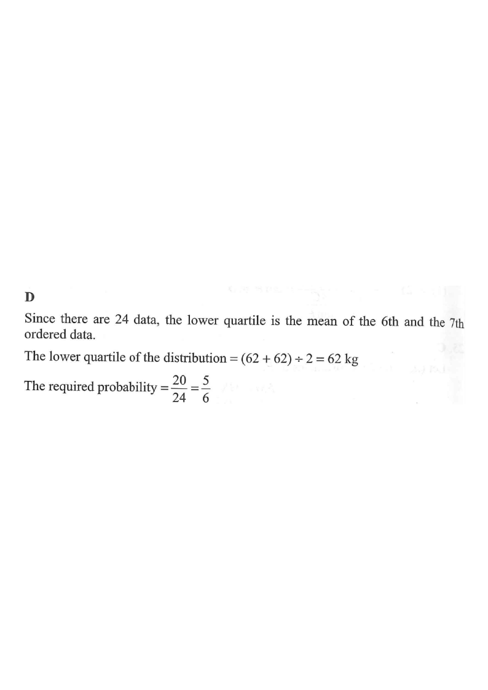

Scroll the steps on the right →
Probability The stem-and-leaf diagram below shows the distribution of the weights (in kg) of a group of workers.
| Stem (tens) | Leaf (units) |
|---|---|
| 5 | 3 6 7 |
| 6 | 1 2 2 2 6 8 |
| 7 | 2 3 4 5 7 7 9 9 |
| 8 | 3 4 5 6 6 7 8 |
If a worker is randomly selected from the group, find the probability that the weight of the selected worker is not less than the lower quartile of the distribution.
A. $\dfrac{1}{4}$ B. $\dfrac{1}{5}$ C. $\dfrac{1}{6}$ D. $\dfrac{5}{6}$

Count the leaves to get the total number of workers.
$3 + 6 + 8 + 7 = 24$ data values, so $n = 24$.
Reading the stem-and-leaf diagram row by row gives the weights in ascending order:
53, 56, 57,
61, 62, 62, 62, 66, 68,
72, 73, 74, 75, 77, 77, 79, 79,
83, 84, 85, 86, 86, 87, 88
The 6th and 7th values are both $62$ kg.
Since there are 24 data, the lower quartile is the mean of the 6th and the 7th ordered data.
$$Q_1 = \frac{62 + 62}{2} = 62 \text{ kg}$$
We need the number of workers with weight ≥ 62 kg.
Values below 62: $53, 56, 57, 61$ → 4 values.
So values $\ge 62$: $24 - 4 = 20$ values.
$$\text{Required probability} = \frac{20}{24} = \frac{5}{6}$$
Answer: D
Question. The weights (in kg) of 20 students are: \(41,44,45,51,52,52,53,56,61,62,63,64,66,66,68,68,72,73,74,75\).
(a) Find the lower quartile.
(b) If a student is chosen at random, find the probability that the student's weight is not less than the lower quartile.